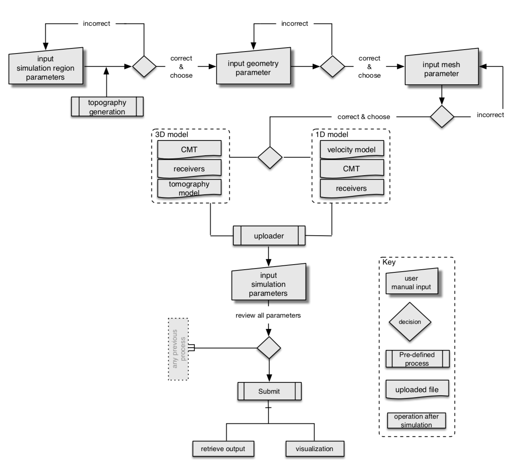
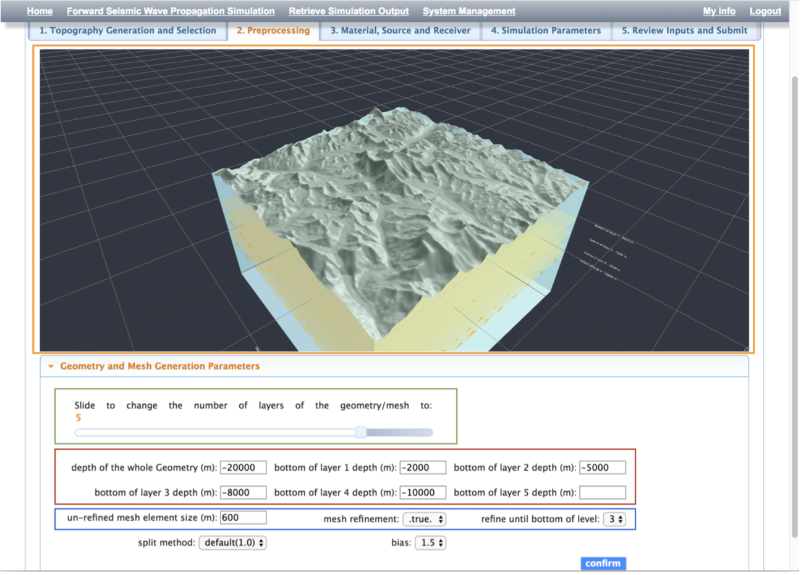
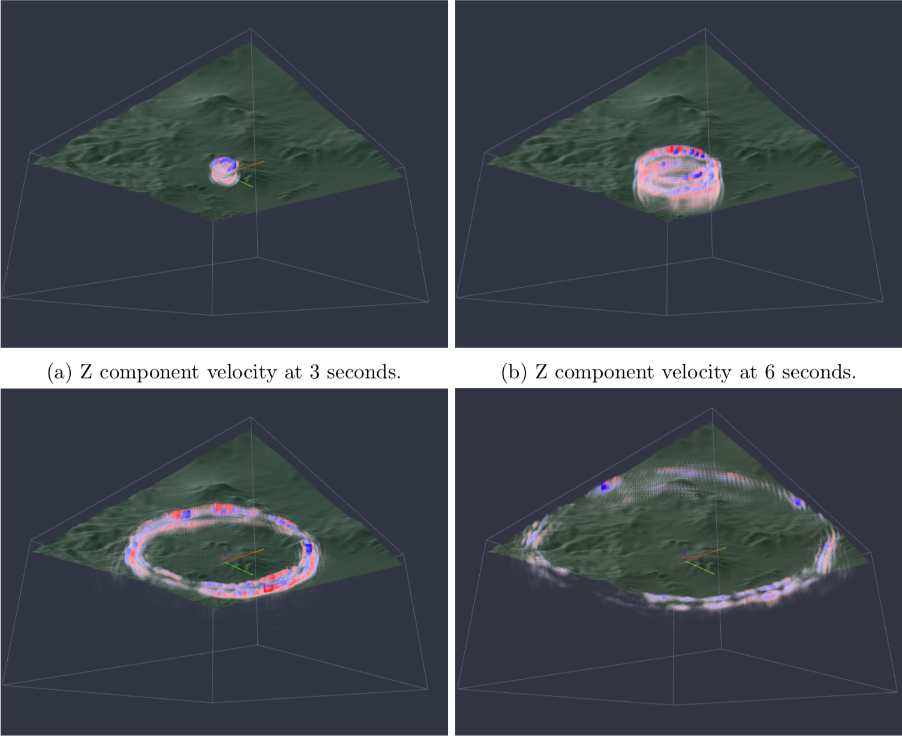

Numerical simulation of 3D seismic wave propagation is an important tool for earthquake studies. However, developing the numerical schemes for solving the partial differential equations is not the only difficult part. The data acquisition, preprocessing, mesh generation, visualization etc, relies on various tools and professional knowledges, which potentially formed an invisible obstacle for the researchers to carry out the simulation for studying realistic earthquakes. In this blog, I would like to briefly introduce an integrated web and HPC based 3D seismic wave propagation simulation environment that I design and implemented.
By properly developing an automated workflow pipeline on the server side (which is another topic maybe I will cover in another blog), the user taskflow is greatly simplified as illustrated below.
For realtime visualization for some steps in both preprocessing and postprocessing (WYSIWYW), an OpenGL ES 2.0 capable GPU and a modern web browser support WebGL are required for the user side. The figure below illustrates the user interface of this environment.
Most of the simulation codes in geophysics community would require multiple computing nodes (with the magnitude order up to 1E3). However, for preprocessing and postprocessing, the computational cost is not very high but would require fast processing for realtime user reaction (the HPC queueing time hence should be avoided), how to implement this in a complete architecture might be too complicated, also beyonds the scope of this blog.
From the user perspective, once the simulation is finished, they can download the simulation results, or if needed, the 3D results can also be interactively visualized as illustrated below.
It seems integrated web-based simulation environment (e-science) development is a popular filed couple of years ago. I know there is an EU funded research project worked by 3-4 universities aims at delivering a similar solution (there might be another close but earlier project from Caltech). Science and technology keep evolving, deep learning is already one of the most popular tools for many research disciplines, I still hope more e-science projects like this can emerge to facilitate the development of numeircal simulation. Both statistics (deep learning) and physics are important.
Researcher / content creator: Cong Luo. Copyright reserved.